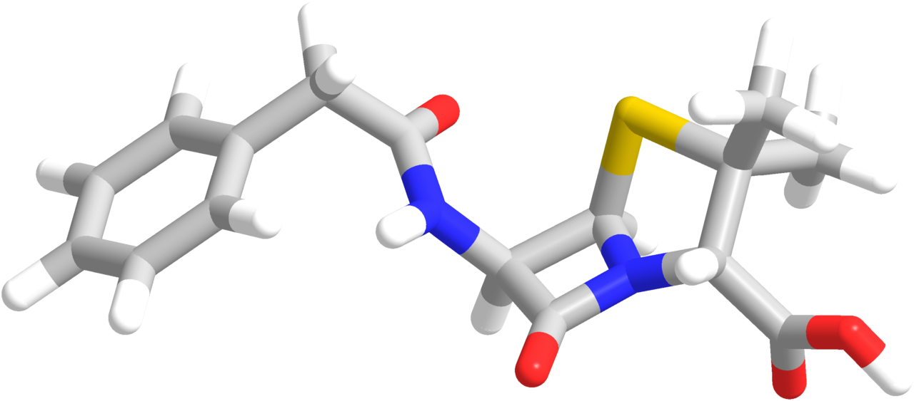

Among the sewer system and vaccinations, antibiotics were a paradigm-shifting innovation for the amelioration of human health! Once fatal infections had become a trivial threat, felled by simply taking a pill--until recently. Bacteria are fighting back, and the discovery of teixobactin may be the trump card we need to stay one step ahead of our single-celled adversaries.
Penicillin, the first antibiotic, was discovered serendipitously in 1897 by Scottish scientist Alexander Fleming. It was produced by a fungus, Penicillium glaucum. After becoming widely prescribed, penicillin dropped the fatality rate of staph infection, for example, from 80% to less than 1%! Since then, scientists have created synthetic versions with more favorable properties, e.g. methicillin and amoxicillin. However, bacteria evolve much faster than we do, and the emergence of resistant strains (MRSA) is a growing problem in the 21st century. In 2008, it's estimated that up to 25% of staph infections in the developed world do not respond to penicillin or its derivatives. Fortunately, these are often not fatal due to an arsenal of other antibiotics, unrelated to penicillin. Resistance to these, however, is also growing. It's estimated that about 700,000 deaths each year are attributed to antibiotic resistant microbes worldwide. What will we do when we've run out of effective antibiotics?
The discovery of teixobactin may address this problem for two reasons. First, teixobactin's mode of action is very unique, making evolving resistance much more difficult. Whereas most antibiotics bind to polypeptides, teixobactin binds instead to lipids. Polypeptides are so easily tweaked because they are directly changed by mutations in DNA. Consequently, resistance to most antibiotics is easily conferred, and can even be artificially evolved in a lab. Lipids are much more difficult to change. In fact, resistance to teixobactin could not be evolved artificially! Second, the method used to discover it is a huge breakthrough. Most antibiotics are discovered in fungi and other bacteria. Discovering these compounds requires culturing these microbes, usually in a petri dish where all the nutrients and growth factors have to be supplied. Unfortunately, culturing new microbes is difficult because we don't know what they need to grow. The new method allows the culture to be grown in the soil, increasing their proliferation. This method will expedite the discovery of new antibiotics in case they become resistant to teixobactin.
The future of fighting bacteria seems bright! But there is still more work to be done. It can take many years before teixobactin makes it into the clinic. It has yet to be synthesized on a large scale and placed in clinical trials.